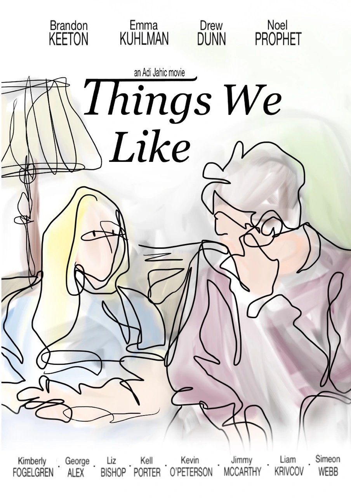

When Georgia meets a young man from Boston, Peter, she leaves her mundane life in suburban Vermont searching for something more.
Written and directed by Adi Jahić
- Duration: 1 hour and 45 minutes
- -Premiered at the Philadelphia International Film Festival.
- -Find information about and reviews of the film here.
- -Media mentions: Split Tooth Media (Review), Split Tooth Media (Discussion), To Each Their Own Cinema, Music City Drive-In, Letterboxd Reviews
- -Andrew Bujalski : Everything I see about youth these days makes me grateful to no longer be in it myself - and lord knows if it takes place in Boston, all the more so... [Things We Like] brought all that stuff back for me with great vividness. The whole thing is quite fragile... but the viewer who gets on its frequency will be rewarded. The whole cast is terrific, and the quirky structure is quite engaging. It really works. I enjoyed this film.